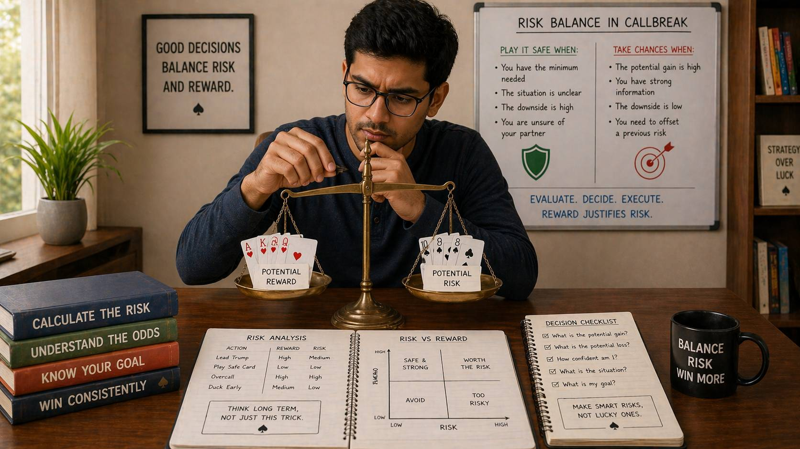

🪶 Introduction
Every decision in Callbreak involves some degree of risk. Calling a specific number of tricks carries risk. Playing a trump card carries risk. Leading a suit you are not certain about carries risk. The question is never whether to take risk — it is always a matter of which risks are worth taking and which ones should be avoided.
🖼️ Callbreak Risk Balance Overview

🎯 What Is Risk Balance?
Risk balance means making decisions where the potential upside is sufficient to justify the potential downside. It is not about avoiding all risk — that is impossible in Callbreak and would lead to overly conservative play that misses opportunities. Instead, it is about discerning which risks have positive expected value and which do not.
Risk vs. Reward Thinking
Before any significant play, ask:
- What do I gain if this works?
- What do I lose if this fails?
- How likely is each outcome?
- Is the ratio of gain to loss favorable?
⚠️ Types of Risk in Callbreak
Understanding the types of risk you face helps you evaluate and manage them individually.
Call Risk
When you call a specific number of tricks, you are risking the difference between your call and your actual result. The higher your call, the more risk you take on.
Resource Risk
Playing high cards or trump cards consumes resources that might be needed later. Resource risk is the risk of running out of key cards at critical moments.
Positional Risk
Your position in the turn order affects your information and options. Acting early carries positional risk because you have less information.
Team Risk
Your decisions affect your partner. Call risk and play risk that you take on also expose your partner to potential negative outcomes.
📊 Evaluating Call Risk
Your call is one of the most significant risk decisions in Callbreak. Getting calls right consistently is fundamental to scoring well.
Hand-Based Risk Assessment
- Low risk call: You have tricks you can reasonably expect to win regardless of card distribution
- Moderate risk call: You have more potential than guaranteed tricks, with some dependency on favorable distributions
- High risk call: You need specific cards or distributions to fulfill your call, with limited backup options
Context-Based Risk Adjustment
- If you are far ahead in score, lower calls reduce risk of losing ground
- If you are far behind, higher calls may be necessary to catch up
- If your partner has called high, supporting their strategy reduces overall team risk
- If opponents are close to winning, you may need to take more risk
💰 Resource Risk Management
Your trump cards, high cards, and suit length are resources. How you use them determines whether you have what you need when it matters.
When Resource Risk Is High
- You have few trump cards (2 or fewer)
- Your high cards are concentrated in a single suit
- You have already played many high cards early in the round
- The round is long and you are uncertain about future play
Managing Resource Risk
- Do not use high cards on low-value tricks early in the round
- Preserve at least one trump for critical moments unless you have a surplus
- Track what has been played to estimate your remaining resource adequacy
- Avoid committing all resources to a single strategy
📍 Positional Risk and When to Take It
Your position in the turn order changes the risk profile of your decisions.
Early Position Risk
When you act early, you have less information about what others hold. This increases the risk that your play will be suboptimal.
When to accept early position risk:
- You have a clear, strong lead that does not depend on others' holdings
- Your partner's earlier play suggests they can support your lead
- The risk of not leading is higher than the risk of leading without full information
Late Position Advantage
When you act late, you benefit from seeing what others have done. This reduces many types of risk but does not eliminate it.
⏱️ Risk-Based Decision Timing
When you take risks matters as much as whether you take them. Risk timing affects outcomes significantly.
Early Round Risk
Early rounds offer more flexibility because many tricks remain. Taking moderate risks early can establish favorable positions.
Mid Round Risk
Mid round is when most strategic decisions are made. Risk management here is about balancing aggression with protection.
Late Round Risk
Late rounds have less room for recovery. Risks taken here have immediate, high-impact consequences.
📈 Risk Based on Game State
The game score changes risk calculus. Being ahead, behind, or close changes which risks are worth taking.
When Ahead
- Reduce risk: Play more conservatively to protect your lead
- Let opponents take risks: They must come to you
- Focus on consistency: Reliable play beats flashy plays that might backfire
When Behind
- Accept calculated risks: You may need to take chances to close the gap
- Balance aggression with discipline: Desperation leads to bad risks
- Support your partner: Team coordination can generate momentum
When Close
- Play percentage plays: Maximize your chances
- Avoid unnecessary risks: Do not give away the game through unforced errors
- Read the table carefully: Small advantages compound in close games
❓ FAQ
What is risk balance in Callbreak?
Risk balance means making decisions where the potential upside is sufficient to justify the potential downside, discerning which risks have positive expected value.
How do I evaluate call risk?
Assess your hand honestly: low risk calls have guaranteed tricks, moderate risk calls have potential tricks with some dependency, and high risk calls need specific cards or distributions.
When should I accept resource risk?
Accept resource risk when fulfilling your call requires using resources aggressively, when your partner needs you to win a specific trick, or when you are behind and need a result.
How do I manage emotional risk?
Recognize when you are emotional, stick to your process, take a break if needed, and focus on long-term results rather than a single round's outcome.
🧾 Summary
Risk balance is about making intentional, calculated decisions:
- Understand the types of risk you face: call risk, resource risk, positional risk, and team risk
- Evaluate call risk honestly based on hand strength and game context
- Manage your resources carefully — running out at critical moments is avoidable
- Use your position strategically to reduce informational risk
- Calibrate risk timing based on the round phase and game state
- Adjust risk approach based on whether you are ahead, behind, or close
- Control emotional risk by recognizing when you are not making rational decisions
- Build a risk evaluation habit that asks the right questions before every significant play
Callbreak rewards players who think clearly about risk. Developing strong risk instincts takes time, but every round is an opportunity to refine your judgment.
🔥 SEO Keywords
callbreak risk management, callbreak risk vs reward, how to manage risk in callbreak, callbreak strategy risk control, callbreak decision risk, callbreak game balance